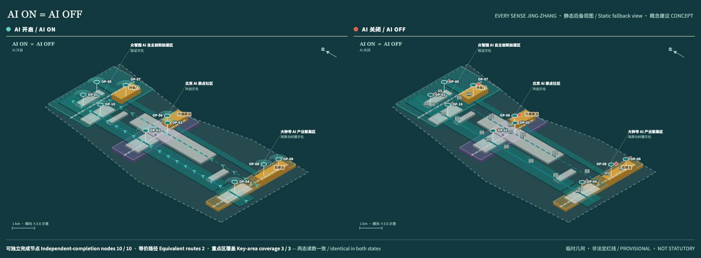
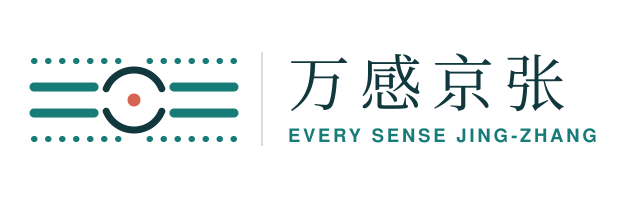

site_area_sqm核心指标与场景快照与 metrics.json 同源复算；公式、来源与证据图见第 10 章
building_footprint_area_sqmgreen_ratiopublic_space_ratioscenario_card_countop_node_count第 16 章可亲手切换 AI 开关验证读数不变同一条主脊、同样十个独立完成节点，服务可达性读数保持 10 / 10 · 等价路径 2 · 重点区覆盖 3 / 3；改变的只是完成同一件事的通道。前往第 16 章「交互场景」→

城市智能的底线是独立完成
城市的智能，不以设备数量衡量，而以任何人能否理解、选择、完成并退出同一项公共服务来检验。
等价是本方案承诺的服务底线；差集是承诺尚未兑现之处的审计靶区，不是现状达标声明。此处的等号表述的是服务结果的目标等价，不表示当前空间覆盖已经等价。
三层范围
全部图示为概念建议；临时几何不构成法定红线、工程线位或已批准实施安排。
总览地图与总体结构
全部图示为概念建议；临时几何不构成法定红线、工程线位或已批准实施安排。

用地分区、概念功能与更新项目
全部图示为概念建议；临时几何不构成法定红线、工程线位或已批准实施安排。

三处重点区的人尺度运行合同
全部图示为概念建议；临时几何不构成法定红线、工程线位或已批准实施安排。

交通慢行、蓝绿公共空间与 AI 场景
全部图示为概念建议；临时几何不构成法定红线、工程线位或已批准实施安排。

等价是本方案承诺的服务底线；差集是承诺尚未兑现之处的审计靶区，不是现状达标声明。图中差集面积 237,622 ㎡、占 AI 开启域 48.16%，标注的是尚待现场审计的部分，不是覆盖已经等价的证明。
十个独立完成节点
全部图示为概念建议；临时几何不构成法定红线、工程线位或已批准实施安排。
任务覆盖与停止权
S01、S05、S08 代表性场景均绑定责任、停止、恢复与证据。
核心指标与复算证据
包内一致性复算，不替代法定或官方精确指标。
site_area_sqmbuilding_footprint_area_sqmgreen_ratiopublic_space_ratiokey_area_countop_node_countscenario_card_countwork_package_countpersona_countlandmark_countinternational_case_count
七类绩效测试
未知不是零；没有真实参与者和协议就不声明结果。
品牌、文化与国际传播
视觉语法、文化叙事与对外传播共用同一套公共承诺；标识、地标名称、活动与传播计划均为概念建议。

颜色不得单独承载信息：任何以颜色区分的状态必须同时具备形状、文字或触觉冗余。

同一套公共承诺可以在第 16 章「交互场景」里亲手验证：切换 AI 开关，十个节点的服务可达性读数不变。
来源与版本定位
关键来源显示 URL/路径与访问日期；OSM 仅作背景。
- OSM-BACKGROUND-CONTEXT-20260810OpenStreetMap public background context (Overpass snapshot, 2026-08-10)https://www.openstreetmap.org/copyright · 2026-08-10
- OFFICIAL-ANNOUNCEMENTOfficial announcement tasks, scope levels, key areas, language, and deliverable context.https://ghzrzyw.beijing.gov.cn/zhengwuxinxi/tzgg/hd/202605/t20260509_4643047.html · repository snapshot
- ACCESSIBILITY-LAW-CN中华人民共和国无障碍环境建设法https://www.gov.cn/yaowen/liebiao/202306/content_6888910.htm · 2026-08-09
- W3C-ACCESSIBILITY-PRINCIPLESAccessibility Principleshttps://www.w3.org/WAI/fundamentals/accessibility-principles/ · 2026-08-10
- WHO-DISABILITY-HEALTHDisability and healthhttps://www.who.int/news-room/fact-sheets/detail/disability-and-health · 2026-08-10
- CASE-CORNELL-TECHCornell Tech Practice and Impacthttps://tech.cornell.edu/education/practice/ · 2026-08-10
- CASE-CETRANCentre of Excellence for Testing and Research of Autonomous Vehicles - NTUhttps://www.ntu.edu.sg/erian/research-capabilities/centre-of-excellence-for-testing-research-of-autonomous-vehicles-ntu · 2026-08-10
- CASE-BARCELONA-URBAN-LABBarcelona Urban Labhttps://bcnroc.ajuntament.barcelona.cat/jspui/handle/11703/90090 · 2026-08-10
假设与补数触发
全部图示为概念建议；临时几何不构成法定红线、工程线位或已批准实施安排。
风险、自检状态与反失败闭环
风险进入 G0—G3；失败只能修正、限定试点或停止。
交互场景：AI ON = AI OFF
前十五章给出承诺，这一章把承诺交给评审与公众亲手验证：切换 AI 开关，同一条主脊、同样十个节点，服务可达性读数不变，改变的只是完成同一件事的通道。全部图示为概念建议；临时几何不构成法定红线、工程线位或已批准实施安排。
等价是本方案承诺的服务底线；差集是承诺尚未兑现之处的审计靶区，不是现状达标声明。本章读数是本方案自身的目标口径，不是现状实测覆盖。
场景准备中…
服务可达性读数
- 可独立完成节点
- 10 / 10
- 等价路径
- 2
- 重点区覆盖
- 3 / 3
切换 AI 开关，这三项读数不变；改变的只是完成同一件事的通道。读数是方案设定的概念承诺，不是实测结果。
- 所在重点区
- AI 开启通道
- AI 关闭通道
- 人工接管
用鼠标点击场景中的节点，或用 Tab 走到下方节点按钮后按 Enter，即可展开该节点的场景卡；按 Esc 关闭。
十个独立完成节点
主脊 · 通用可达底线
两条等价路径之一，AI 开关两态均连续
两条等价路径之一，AI 开关两态均连续
低刺激安静替代线
虚线，第二条等价路径
虚线，第二条等价路径
独立完成节点 OP-01—OP-10
两态中位置与可达性均不变
两态中位置与可达性均不变
人工求助点
仅 AI 关闭态出现；珊瑚色只用于人工接管与求助
仅 AI 关闭态出现；珊瑚色只用于人工接管与求助
文化地标
共轨门 / 万感原点 / 百感台
共轨门 / 万感原点 / 百感台
临时重点区与总体范围
虚线边表示非法定边界
虚线边表示非法定边界
场景由 geometry/*.geojson 本地预处理生成（assets/scene-data.js），采用局部平面投影；为便于阅读，横向（东西向）示意放大约 3.6 倍，纵向 1 km 比例尺以画面标注为准。页面完全离线运行，不加载任何远程脚本、字体、瓦片或统计代码。读数是方案设定的概念承诺，不是实测结果；真实结论须经参与者测试后方可声明。